A Man Deified or a God Historicized?
| Two Opposite Scenarios |
Euhemerism | 200 Years of Records |
Two Opposite Scenarios
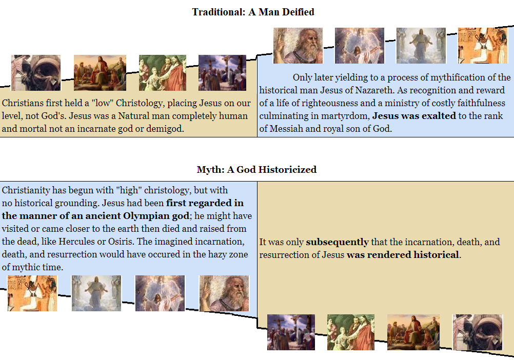
Two entirely different spheres
"No one who examines the Gospels, and then reads the epistles of Paul
can escape the impression that he is moving in two entirely different spheres...
When Paul writes of Jesus as the Christ, historical and human traits appear to be obscure, and Christ appears to have significance
only as a transcendent divine being."
H. Ridderbos Paul and Jesus
"But the question which NT scholarship has never asked is the most natural one of all:
suppose Paul made no such leap?
If all we find in Paul's presentation of Christ is this transcendent divine being whose activities are never linked to history or an earthly location, is there any justification for assuming that Paul's Christ arose out of Jesus of Nazareth, out of the human figure who appears for the first time only in Gospels that were written some time after Paul?"
suppose Paul made no such leap?
If all we find in Paul's presentation of Christ is this transcendent divine being whose activities are never linked to history or an earthly location, is there any justification for assuming that Paul's Christ arose out of Jesus of Nazareth, out of the human figure who appears for the first time only in Gospels that were written some time after Paul?"
E. Doherty
"I would suggest that only such a scenario [the myth one] of early Christological development can account for,
- first, the utter absence of the gospel-story tradition from most of the New Testament Epistles,
- and second, the fictive, nonhistorical character of story after story in the Gospels."
Robert Price (2 Phds) Deconstructing Jesus &
The Incredible Shrinking Son of Man
Euhemerism: the Process of Historicizing a God
"Such a process of hypothetical historicizing of a god hitherto imagined as living in the vague past
would certainly not be without precedent.
I find it ironic that in his book Did the Greeks Believe in Their Myths? Paul Veyne
...describes how thinkers of Greek and Roman antiquity,
including Diodorus, Cicero, Livy, Pausanias,
and Strabo,
approached mythic figures such as Theseus, Herakles, Odysseus, Minos, Dionysus,
Castor, and Pollux:
they readily dismissed the supernatural tales of their heroes' divine paternity
and miraculous feats
but doggedly assumed there must have been a
historical core that had been subsequently mythologized.
Their task as historians was to distill the history from the myth and to place
the great figures where they must have occurred on the historical time-chart.
Herodotus, for instance, tried to determine just when Herakles lived,
though he could not quite manage to reconcile the conflicting "information"
he derived from Egyptian, Greek, Phoenician, and other sources.
The whole approach earned the name of Euhemerism,
from Euhemerus who originated it.
The idea was to assume that all ancient gods were glorified ancestors or historical culture heroes.
Though no mundane, "secular" information about them survived,
it had to be assumed that a genuine historical figure lay at the root of the myths."
Robert Price Deconstructing Jesus
See also
Wikipedia on Euhemerism
"Unless I am mistaken, this seems to be the approach of the questors for a historical Jesus."
Robert Price
Parsing 200 Years of Records
Searching for Key-words
The digital versions of all early Christian writings including apocrypha and fragments
(180 files making over 20 megabytes)
were collected and a text searching program was used to exhaustively search them
for certain key-words and phrases associated with Jesus (and allowing for varying word forms where possible).
These 33 key-words include
- locations like Nazareth, Jerusalem, Galilee, Jordan river, Bethlehem
- people like Mary, Pilate, Herod, Lazarus
- actions like Crucified, Died, Saying, Miracle, Healing, Betrayed
- Jesus' names like Lord, Christ, Messiah, Son.
The results are here arranged in chronological order,
of 62 documents or authors, to see who said what, and when about the Gospel life of Jesus.
The dates are close to the ones of Peter Kirby and often questionable like
1 Clement, Ignatius, even Paul.
The four Gospels and Acts are notably absent.
The goal here is to verify that their story is supported by other records, not that they support themselves
-a classic circular reference error done by NT scholars.
1 Timothy 6:13 and 1 Thessalonians 2:15-16 are considered interpolations.
It is also disputable that the author of 1 Clement had an HJ in mind, since
'the words of the Lord Jesus' in chapter 13 and 46:8
could very well come from revelation.
| Heaven & Underworld | Earth |

The main table above is updated from a previous version by
Quentin David Jones.
Clicking on it opens the Appendix for this chapter: 200 Years of Records.
We may debate on a couple of ambiguous Christian expressions, but not the overall pattern and the context it brings:
"If all we have in the earliest Christian record is this cosmic divine
figure who moves in mythological spheres, just like all the other dying/resurrecting saviors of the day,
are we not compelled by scientific principles to accept that
this and no more was the object of early Christian worship?
If, to support this, we can present within the evidence a logical process by which
such a figure can be seen to take on a biography and a place in history,
do we have any justification for continuing to maintain that
the divine, cosmic Christ grew out of the human Jesus of Nazareth?
Earl Doherty
Jesus Puzzle Postscript
Life & Teachings of Jesus in the Epistles
The 22 Christian documents known as the Epistles,
- written by a dozen of different authors, Paul being the most prominent,
- many of which predate the Gospels by several decades,
- considered An Authoritative Guide
contains more than 500 references to the 'Christ', 'the Son', 'Jesus' (='Yahweh saves' in Hebrew) or 'the Lord'.
Yet, if we put aside the contested "Brother of the Lord" in Gal. 1:19
and 2 interpolations 1 The. 2:15-16 &
1 Tim. 6:13
that we will look in chap.6. Debating Possible References to a HJ, in 80,000 words,
The Epistles never mention any...
 Place Place& Time |
People |
Story |
Saying |
Miracle |
PassionStory |
No Place & TimeAnywhere Jesus is supposed to have been
- Galilee: Nazareth where he was raised, the Sea of Galilee around where so much happened, Capharnaum, Bethsaida, Chorazin, Cana, Nain, Gennesaret, Tiberias, Dalmanutha (near Magdala?)
- The Jordan river where he was baptized
- Samaria & Decapolis: Sychar, Salem, Aenon, Gerasa
- Syro-Phoenicia: Tyre, Sidon, Caesarea Philippi
- Judea: Bethlehem where he was born, Jericho, Ephraim, Bethany
- Jerusalem (never connected with Jesus), the Pool of Bethesda
- The Temple, Gethsemane Garden, Hill of Calvary, Empty Tomb
- Houses, Synagogues, Fountains, Hills, Valleys, Trees...
In all the Christian writers of the first century, in all the devotion they display about Christ
and the new faith, not one of them expresses a desire to see the birthplace of Jesus,
to visit Nazareth, his hometown. No one talks about having been to the sites of his preaching,
the upper room where he held his Last Supper, the hill on which he was crucified,
or the tomb where he was buried and rose from the dead. Not only is there no evidence
that anyone showed an interest in visiting such places, they go completely unmentioned.
The words Bethlehem, Nazareth and Galilee never appear in the epistles, and the word Jerusalem
is never used in connection with Jesus.
No hint of pilgrimage to Calvary itself, where humanity's salvation was presumably consummated.
- How could such a place not have become the center of Christian devotion?
- How could it not have been turned into a shrine?
Each year at Passover we would expect to find Christians observing their own celebration
on the hill outside Jerusalem, performing a rite every Easter Sunday at the site of the nearby tomb.
Christian sermonizing and theological meditation could hardly fail to be built around the places of salvation,
not just the summary events.
Do Christians avoid frequenting such places out of fear?
Acts, possibly preserving a kernel of historical reality, portrays the apostles as preaching fearlessly in the Temple
in the earliest days, despite arrest and persecution, and the persecution has in any case been much exaggerated for the early decades.
Even such a threat, however, should not and would not have prevented clandestine visits by Christians,
and there should have been many other places of Jesus' career where visitation would have involved no danger.
In any case, there would have been no danger in mentioning them in their own correspondence.
How could Paul have been immune to the lure of such places?
"All I care for is to know Christ,
to experience the power of his resurrection,
to share in his sufferings..."
Philippians 3:10
And yet
- Does he care enough to visit the hill of Calvary upon his conversion, to experience those sufferings more vividly, to feel beneath his feet the sacred ground that bore the blood of his slain Lord?
- Does he stand before the empty tomb, the better to bring home to himself the power of Jesus' resurrection, to feel the conviction that his own resurrection is guaranteed?
This is a man whose letters reveal someone full of insecurities and self-doubts,
possessed by his own demons, highly emotional, a man driven to preach else he would go mad,
as he tells us in 1 Corinthians 9:16.
- Would he not have derived great consolation from visiting the Gethsemane garden, where Jesus was reported to have passed through similar horrors and self-doubts?
- Would his sacramental convictions about the Lord's Supper, which he is anxious to impart to the Corinthians (11:23f), not have been heightened by a visit to the upper room in Jerusalem, to absorb the ambience of that hallowed place and occasion?
This type of consideration supplies yet another reason to regard as unacceptable the standard rationalization
that Paul was uninterested in the earthly life of Jesus.
(Even if that life was not the Gospel life, it is difficult to imagine an early Christian movement
following a human teacher and yet knowing no biographical details of his career, real or invented.)
Nothing learnt from Jerusalem
When Paul undertook to carry his mission to the gentiles,
surely he would have wanted and needed-to go armed with the data of that life, with memories of the places Jesus had frequented,
ready to answer the inevitable questions his new audiences would ask in their eagerness to hear
all the details about the man who was the Son of God and Savior of the world.
Instead, what did he do?
By his own account in Galatians, he waited three years following his conversion
before making a short visit to Jerusalem,
"...to get to know Cephas. I stayed with him for fifteen days, without seeing any of the other apostles
except James, the brother of the Lord."
Nor did he return there for another fourteen years
where he just mentioned that James, Cephas and John
"recognized the grace given to me" and "agreed that we (with Barnabas) should go to the Gentiles"
and asked to not foget the poor.
- Did Paul learn all the data of Jesus' life on that one occasion? Did he visit the holy places?
- But if he did make his own pilgrimage to Calvary and the empty tomb, can we believe he would not have shared those experiences-and they would have been intensely emotional ones-with his readers?
- If not here, then at least at some point in his many letters?
No Time
Nor do they give any possible clue to pinpoint Jesus historically.
"But when the fullness of time had come, God sent his Son"
Galatians 4:4
"For he [God] saith, I have heard thee in a time accepted,
and in the day of salvation have I succoured thee:
behold, now [referring to his own work] is the accepted time; behold, now is the day of salvation."
2 Corinthians 6:2
Paul's view of the present period leading up to the end of the world
seems to take no account of the recent activity of Jesus on earth.
Passages in Romans 8:18-25 and 13:11-12, and especially 2 Corinthians 6:2,
envision no impingement of Jesus' recent career on the progression from the old age to the new;
rather, it is Paul's own present activity which is an integral part of this process.
Nor does he ever address the question which would have reflected popular expectation:
- Why did the actual coming of the Messiah not in itself produce the arrival of the Kingdom?
In the epistles, Christ's anticipated Coming at the End-time is never spoken of as a "return" or second Coming;
the impression conveyed is that this will be his first appearance in person on earth.
Earl Doherty The Jesus Puzzle
No People- Mary
- Joseph
- Herod
- John the Baptist
- Lazarus
- Jairus
- The Samaritans
- Mary Magdalene
- Joseph of Arimathea
- Zacchaeus
- Nicodemus
- Simeon and Anna
- The Pharisees
- The word 'Disciples'
- The Sanhedrin
- Caiaphas, the high priest
- Any Roman including Pilate
- 'Twelve' appears only once as a symbolic number. See tab 'Visions of Resurrection'.
Except three leaders in Jerusalem:
- Cephas/Peter
- James
- John
No Mary & Joseph
While greeting 25 Christians by their names and trying to say something good about each one, Paul said
"Greet Mary, who worked very hard for you." Romans 16:6,
and missed a chance to connect the name with the mother of the HJ.
Non-Gospel Christian writings before Ignatius have nothing to say about Mary; besides
Romans 16:6,
her name is never mentioned. Nor does Joseph, Jesus' reputed father, ever appear.
The author of 1 Peter fails to offer Mary as a model in 3:1-6 where he is advising women
to be chaste, submissive in their behavior, and reverent like those
"who fixed their hopes on (God)".
Instead, he offers the Old Testament figure of Sarah.
No 12 Disciples
The word "disciple(s)" does not appear in the epistles,
and the concept of "apostle" in early Christian writings is a broad one,
meaning simply a preacher of the message (i.e., the "gospel") about Christ.
Paul travels with other apostles like
Barnabas, Timothy or Titus.
It never applies to a select group of Twelve who supposedly possessed special authority arising
from their apostleship to Jesus while he was on earth. It is far from clear what "the Twelve"
in 1 Corinthians 15:5 refers to.
 Cephas/Peter, James & John
Cephas/Peter, James & John
Finally! After years of traveling through bustling cities and the wilderness,
Paul arrives at the heart of his new faith,
the epicenter of his transformation.
There, he is set to come face-to-face with the historical disciples
of the man who was for Paul the Son of God,
sustainer of the universe and savior of mankind.
But, what tells us that these three men know Jesus better and differently?
that were the three main witnesses of an earthly Jesus?
that were the three main witnesses of an earthly Jesus?
Although they were important figures in Jerusalem,
"James, Cephas and John, those esteemed as pillars"
Galatians 2:9
Cephas, John and
James have no special status or authority going back to Jesus.
"For God, who was at work in Peter as an apostle to the circumcised,
was also at work in me as an apostle to the Gentiles."
Galatians 2:8
"Within our community, God has appointed... apostles...prophets and teachers."
1 Corinthians 12:28
If Jesus had conducted a ministry within living memory,
there would also have been an appeal to the apostles who had been chosen by Jesus
and heard the words he spoke. If too much time had passed, that appeal would have been
to choose whom such followers had themselves appointed and given the proper doctrine.
In several letters Paul deals with accusations by certain unnamed rivals that he is not a legitimate apostle.
Even Peter and James dispute his authority to do certain things.
Can we believe that in such situations no one would ever have used the argument
that Paul had not been an actual follower of Jesus, whereas others had?
Paul never discusses the point,
while it will be the case later on.
The text below is a supposed speech of Peter against Simon Magus who would have claimed like Paul to know Jesus from visions.
The text below is a supposed speech of Peter against Simon Magus who would have claimed like Paul to know Jesus from visions.
"If, then, our Jesus appeared to you in a vision, made Himself known to you, and spoke to you,
it was as one who is enraged with an adversary; and this is the reason why it was through visions and dreams,
or through revelations that were from without, that He spoke to you.
But can any one be rendered fit for instruction through apparitions?
And if you will say, 'It is possible,' then I ask, 'Why did our teacher abide and discourse a whole year to those who were awake?'
And how are we to believe your word, when you tell us that He appeared to you? And how did He appear to you,
when you entertain opinions contrary to His teaching?
But if you were seen and taught by Him, and became His apostle for a single hour,
proclaim His utterances, interpret His sayings, love His apostles, contend not with me who companied with Him.
For in direct opposition to me, who am a firm rock, the foundation of the Church, you now stand.
If you were not opposed to me, you would not accuse me, and revile the truth proclaimed by me,
in order that I may not be believed when I state what I myself have heard with my own ears from the Lord,
as if I were evidently a person that was condemned and in bad repute"
The Clementine Homilies book 17 chapter 19
Having Vision is not enough now.
But at the time of Paul, it carries all authority.
But at the time of Paul, it carries all authority.
No Apostolic Tradition
Nor is there any concept of apostolic tradition in the first century writers,
no idea of teachings or authority passed on in a chain going back to the original Apostles and Jesus himself.
Instead, everything is from the Spirit, meaning direct revelation from God,
with each group claiming that the Spirit they have received is the genuine one and reflects the true gospel.
This is the basis of Paul's claim against his rivals in
2 Corinthians 11:4-6.
"For if someone comes to you and preaches a Jesus other than the Jesus we preached,
or if you receive a different spirit from the Spirit you received,
or a different gospel from the one you accepted, you put up with it easily enough.
I do not think I am in the least inferior to those “super-apostles.” I may indeed be untrained as a speaker, but I do have knowledge. We have made this perfectly clear to you in every way."
I do not think I am in the least inferior to those “super-apostles.” I may indeed be untrained as a speaker, but I do have knowledge. We have made this perfectly clear to you in every way."
There is no Apostolic tradition going back to Jesus (contrary to what will come
after in the Acts).
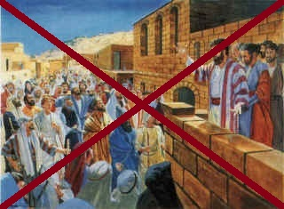
"I want you to know, brothers and sisters, that the gospel I preached is not of human origin.
I did not receive it from any man, nor was I taught it;
rather, I received it by revelation from Jesus Christ."
I did not receive it from any man, nor was I taught it;
rather, I received it by revelation from Jesus Christ."
Galatians 1.12
"But when God, who set me apart from birth and called me by his grace,
was pleased to reveal his Son in me so that I might preach him among the Gentiles, I did not consult any man"
Galatians 1.15-16
The writer of 1 John, in his declaration (4:1f)
that the Son of God has come in the flesh,
draws on no apostolic tradition, on no historical record, but must claim validity for his own Spirit,
as opposed to the Satan-inspired false spirit of the dissidents.
In chapter 5, he declares that it is God's testimony through the Spirit which produces faith in the Son,
not several decades of Christian preaching going back to Jesus himself.
- How could this writer in the community of John, which later produced the Fourth Gospel, say (5:11) that it is God who has revealed eternal life, and ignore all those memorable sayings of Jesus like "I am the resurrection and the life" which that Gospel so richly records?
As for Jesus' great appointment of Peter as the "rock" upon which his church is to be built,
no one in the first century (including the writers of 1 and 2 Peter)
ever quotes it or uses it in the frequent debates over authority.
No John the Baptist
In Christian mythology there is hardly a more commanding figure short of Jesus himself.
But, until the Gospels appear, John is truly
lost in the wilderness, for no Christian writer refers to him.
The only surviving writer of the first century (outside the Gospels) who does refer to John the Baptist
is a non-Christian: the Jewish historian Josephus. However, he fails to make any link
between John and Jesus or the Christian movement.
No Herod, Sanhedrin or Jews
No Pilate, Soldiers or Romans
See tab No Passion.
Earl Doherty The Jesus Puzzle
No Story- Birth
- Baptism
- Teaching at 12 in the Temple
- 40 days in the wild tempted by Satan
- Fulfilling all OT prophecies (or seen as)
- Discussion with the Pharisees or religious establishment
- Transfiguration
- Miracles
- Triumphal entry into Jerusalem
- Cleansing of the Temple
See tab 'No Passion' for:
No Passion story (Judas betrayal, trial, mob, earthquake...).
If the voice of Jesus in the early Christian correspondence is silent on everything
from ethical teachings to apocalyptic predictions, if his calling of apostles during
an earthly ministry is nowhere in evidence in the early apostolic movement,
- What about the physical details of his birth, ministry and passion?
- Is the life portrayed in the Gospels that is supposed to have been lived in the time of two Herods and Pontius Pilate anywhere in evidence in the New Testament epistles?
No Birth Story
As for the Nativity stories in Matthew and Luke, images of the birth of Jesus bombard us
at every Christmas, but nowhere in the first century are such images discernible.
Shepherds, angels, magi, mangers or overbooked inns are never mentioned; nor is the city
of Bethlehem or the great census under Augustus. No star lights up the night sky at
Jesus' birth in either Christian or pagan writings. No association with the cruel Herod
and his slaughter of innocent children, an event unrecorded by historians of the time, is ever made.
No Baptism
For Paul, baptism is the prime sacrament of Christian ritual, through which the convert
dies to his old, sinful life and rises to a new one. In Romans 6:1-11 he breaks down
the baptism ritual into its mystical component parts. Yet never do any of those
parts relate to the scene of Jesus' own baptism. The descent of the dove into Jesus
would have provided the perfect parallel to Paul's belief that at baptism the
Holy Spirit descended into the believer. The voice of God welcoming Jesus as his Beloved
Son could have served to symbolize Paul's contention (as in Roman 8:14-17) that believers
have been adopted as sons of God.
Yet from the first century writers like Paul
we would never even know that Jesus had been baptized.
No Relics
Nor do they breathe a word about relics associated with Jesus.
- Where are his clothes, the things he used in everyday life, the things he touched?
- Can we believe that items associated with him in his life on earth would not have been preserved, valued, clamored for among believers, just as things like this were produced and prized all through the Middle Ages?
- Why is it only in the fourth century that pieces of the "true cross" begin to surface?
E. Doherty Jesus Puzzle
No Saying** Not counting when Jesus talks from the OT or heaven or inside the head of an Apostle.
No Wise Teachings
- Moral maxims.
Despite that the Epistles show great ethical concerns, nothing is ever attributed to Jesus."Love Your Neighbor" Leviticus, is quoted in James, the Didache, and 3 times in Paul, yet none of them points out that Jesus had made this a centerpiece of his own teaching. Both Paul (1 Thessalonians 4:9) and the writer of 1 John even attribute such love commands to God, not Jesus!Romans 12 and 13 is a litany of Christian ethics, as is the Epistle of James and parts of the "Two Ways" instruction in the Didache and Epistle of Barnabas; but though many of these precepts correspond to Jesus' Gospel teachings, not a single glance is made in his direction. Such examples could be multiplied by the dozen. - Cynic principles.
Many sayings like "do not repay wrong with wrong, but retaliate with blessing," 1 Peter were common at the time and never correspond to the ones of Jesus "turn the other cheek".
No Prayer, Prophecies & Sermons
- The "voice" of Christ.
Each time Hebrews talks about the "voice" of Christ today (1:2f, 2:11, 3:7, 10:5), it is taken from the Old Testament - Prayer.
Paul said "we do not know how we are to pray," Romans 8:26,
Jesus said "This, then, is how you should pray: 'Our Father in heaven,...'" Matthew 9, Luke 11 - Sermons.
"Bread of Life" John 6, "Sermon on the Mount" (The Beatitudes) Matthew 5-7... - Any Prophecy:
Betrayal, Escape of all Disciples, Denial of Peter, Jerusalem & Temple Destruction... - Anything related to the 'Kingdom of God'.
The term appears 162 times in the Gospels but never in the Epistles. - His claim to be the 'Son of Man'.
No Parables
- The Sower Mk 4, Mt 13, Lk 8, Th 9
- The mustard seed Mk 4, Mt 13, Lk 13, Th 20
- The Tenants Mk 12, Mt 21, Lk 20, Th 65
- The Budding Fig Tree Mk 13, Mt 24, Lk 21
- The Faithful Servant Mk 13, Mt 24, Lk 12, Th 21, 103
- The Wheat and Tares Mt 13, Th 57
- The Leaven Mt 13, Lk 13, Th 96
- The Hidden Treasure Mt 13, Th 109
- The Pearl Mt 13, Th 76
- The Lost Sheep Mt 18, Lk 15, Th 107
- The Laborers in the Vineyard Mt 20
- The Two Sons Mt 21
- The Ten Virgins Mt 25
- The Good Samaritan Lk 10
- The Rich Fool Lk 12
- The Prodigal Son Lk 15 ...
No Instruction on Judaism
- His view on the Jewish doctrines and the necessity to conform or not with the Mosaic Law.
- His discussions or debates with the Pharisees.
- Jesus' own circumcision but
"if you let yourselves be circumcised, Christ will be of no value to you at all...Galatians 5:2-6
For in Christ Jesus neither circumcision nor uncircumcision has any value"
The Epistles even contradict Jesus on the Jewish Law
Jesus in the Gospels
"If you would enter into life, keep the commandments"
Matthew 19:17
"Think not that I am come to destroy the law, or the prophets:
I am not come to destroy, but to fulfill. For verily I say unto you, Till heaven and earth pass,
one jot or one tittle shall in no wise pass from the law, till all be fulfilled."
Matthew 5:17-18
"But it is easier for heaven and earth to pass away than for one dot of the Law to become void."
Luke 16:17
Paul in the Epistles
"the very commandment which promised life proved to be death to me"
Romans 7:10
"But now we are delivered from the law, that being dead wherein we were held;
that we should serve in newness of spirit, and not in the oldness of the letter."
Romans 7:6
"For Christ is the end of the law for righteousness to everyone that believeth."
Romans 10:4
"Christ hath redeemed us from the curse of the law, being made a curse for us: for it is written,
Cursed is every one that hangeth on a tree:"
Galatians 3:13
"You who are trying to be justified by the law have been severed from Christ, you have fallen from grace."
Galatians 5:4
No Words on the Cross
No one quotes any words of Jesus at the crucifixion.
Ephesians 4:32 urges that Christians
"forgive one another as God in Christ forgave you.".
The writer is apparently unaware of the moving words which Luke
gives us (23:34),
spoken by Jesus as he hung on the cross, words which would have provided a noble example to follow:
"Father, forgive them, for they know not what they do."
The writer of 1 Clement (53:4), after a long dissertation on forgiveness,
searches for words to sum up his point.
They are not the words of Jesus on the cross, but the plea of Moses to God
that he forgive the disobedient Israelites.
No Ministry
But the silence extends beyond individual pronouncements to Jesus' ministry as a whole.
If Jesus had conducted a ministry within living memory, within Paul's own lifetime,
remembrance of that ministry would surely have loomed large in Christian awareness.
In the rough and tumble world of religious proselytizing, the appeal to Jesus'
own words and actions, the urge to claim a direct link back to Jesus himself
in order to confer authority and reliability on each apostle's preaching of the
Christ, would have been an inevitable mark of the early missionary movement.
In Romans 10, Paul is anxious to show that the Jews have no excuse
for failing to believe in Christ and gaining salvation, for they have heard the good news about him from appointed messengers like
Paul himself.
And he contrasts the unresponsive Jews with the gentiles who welcomed it.
But surely Paul has left out the glaringly obvious.
For the Jews—or at least some of them—had supposedly rejected that message from the very lips of Jesus himself,
whereas the gentiles had believed second-hand. In verse 18 Paul asks dramatically:
"But can it be they never heard it (i.e., the message)?"
- How could he fail to highlight his countrymen's spurning of Jesus' very own person?
The agency of all recent activity seems to be God, not Jesus.
This is a recurring feature of Paul's letters: he totally ignores Jesus' recent career and places the focus
of revelation and salvation entirely upon the missionary movement of which he is the prominent member
(as he sees it). The pseudo-Pauline letters do this, too.
Read passages like Romans 16:25-27, Colossians 1:25-27, Ephesians 3:5-10 and ask yourself
- Where is Jesus' role in disclosing God's long-hidden secret and plan for salvation?
- Why, in 2 Corinthians 5:18, is it Paul who has been given the ministry of reconciliation between man and God, and not Jesus in his ministry?
Paul speaks of "the gospel of God," "God's message".
It is God appealing and calling to the Christian believer.
2 Corinthians 5:18 tells us that "from first to last this has been the work of God" (New English Bible translation).
In Romans 1:19 the void is startling.
Paul declares: "All that may be known of God by men...God himself has disclosed to them."
- Did Jesus not disclose God, were God's attributes not visible in Jesus?
- How could any Christian—as so many do—express himself in this fashion?
Earl Doherty The Jesus Puzzle
No Miracle- Feeding of 5000 Jn 6
- Heals blind man Mk 8
- Heals Gadarene demoniac Mt 8
- Stills storm Mk 4
- Walks on water Mk 6
- Feeding of 4000 Mk 8
- Syrophoenician girl healed Mk 7
- Heals centurion's servant Mt 8
- Raises Jairus' daughter Mk 5
- Turns water to wine Jn 2
- Heal's official's son Jn 4
- Raises widow's son Lk 7
- Ten lepers healed Lk 17
- Raises Lazarus Lk 17
- Blind Bartimaeus healed Lk 18
- Heals cripple at pool Jn 5
- Heals blind man Jn 9
- ...
The occurrence of miracles and wondrous events was an indispensable sign of the imminence of the Kingdom.
Anyone who claimed that the Day of the Lord was at hand had to produce signs and wonders to prove it.
All awaited the events spoken of in prophets like Isaiah:
"Then the eyes of the blind shall be opened,
And the ears of the deaf unstopped;
Then shall the lame man leap like a hart,
And the tongue of the dumb sing for joy."
And the ears of the deaf unstopped;
Then shall the lame man leap like a hart,
And the tongue of the dumb sing for joy."
Isaiah 35:5-6
"But thy dead live, their bodies shall rise again.
They that sleep in the earth will awake and shout for joy."
Isaiah 26:19
It seems strange that Paul, in urging his readers to be confident that the advent of Jesus
and the kingdom lay just around the corner (eg Romans 8:19, 13:12), would never point to
traditions about miracles by Jesus as the very fulfillment of the wonders that were
expected at such time.
In 1 Corinthians 1:22 he scoffs at the Jews who always call for miracles
to prove Christian claims, but here he should have the perfect answer for such calls:
the signs which Jesus himself had provided.
In passages like 1 Corinthians 15:12f, Paul
addresses those in Corinth who question whether human beings can be resurrected from death:
"How can some of you say there is no resurrection from the dead ?"
Yet would Paul not have had the perfect rejoinder, proof that humans can come back from the dead?
He could point to traditions about the revival of Jairus' daughter (Mk 5:21-43), about
the astounding emergence of Lazarus from his tomb (John 11:1-44).
It is impossible to think that Paul would not have appealed to them in his argument.
To find the first indication of Jesus as a miracle worker, we must move beyond Ignatius
to the Epistle of Barnabas.
No first century epistle mentions that Jesus performed miracles.
In some cases the silence is striking.
Both Colossians and Ephesians view Jesus as the Savior
whose death has rescued mankind from the demonic powers
who were believed to pervade the world, causing sin, disease and misfortune.
But not even in these letters is there any mention of the healing miracles that the Gospels are full of,
those exorcisms which would have shown that Jesus had conquered such demons even while he was on earth.
Earl Doherty The Jesus Puzzle
No Passion Story- Who killed Jesus, Where and When
- His doubts in Gethsemane Garden
- Betrayal by Judas (nor Judas himself)
- Denial by Peter
- Caiaphas, the high priest
- Trial by the Sanhedrin
- Any Jewish mob
- Pontius Pilate or any Roman
- Barabbas
- Any beating
- Jesus's impassible behavior
- Any Information about the Crucifixion
- Jesus's agony on the cross
- Any earthquake or dark sky
- Empty tomb
- Any Apparition in Flesh and Doubting Thomas...
An Unknown Execution
The Gospel details of Jesus' trial and crucifixion are imbedded in our cultural heritage,
from Pilate to the crown of thorns, from the raising up of the cross between two thieves
to the gambling of the soldiers for Jesus' clothes, from the darkness over the land at his death
to Josephus of Arimathea laying Jesus in his own tomb.
Yet none of these details surface in the wider Christian picture before the second century.
"We preach Christ crucified," says Paul. But he does not tell us where or when, or that Roman or Jew was involved. None of the great cast of characters which passes through the various stages of the Gospel trial and crucifixion are ever mentioned in his letters.
"We preach Christ crucified," says Paul. But he does not tell us where or when, or that Roman or Jew was involved. None of the great cast of characters which passes through the various stages of the Gospel trial and crucifixion are ever mentioned in his letters.
All the early writers lack the essential atmosphere of the Gospel presentation of Jesus' death:
that this was the unjust execution of an innocent man, beset by betrayal and false accusations and a pitiless establishment.
Instead, Paul in Romans 8:32 extols the magnanimity of God who
"did not spare his own Son but surrendered him for us all."
And for the writer of Ephesians (5:2) it is Christ himself who in love
"gave himself up on your behalf as an offering and a sacrifice whose fragrance is pleasing to God."
Wherever Paul and others in the first century envisioned this sacrifice as having taken place,
it seems light-years from the dread hill of Golgotha, from the scourges and the plaited thorns,
the jeering soldiers and taunting crowds, where God expresses his dark wrath in earthquake,
blackened heavens and a rending of the veil to his own holy sanctuary.
Paul does not even tell us that Jesus was tried!
The humility and suffering of Jesus?
If it be claimed that we see this kind of thing in documents like 1 Peter (2:22)
and 1 Clement (ch.16) [which is not part of the epistles] where the writers
talk of Jesus' humility and suffering by summarizing or quoting a scriptural
passage like Isaiah 53, I would argue that they are not presenting 'history' at
all. They are presenting Scripture, which is regarded as embodying or revealing
the Christ event which has taken place in the mythical realm, like the myths of all the other savior gods of the day.
No Eucharist
See Tab "Sacramental Meal"
No Betrayal and Denial
Judas is notably missing from Hebrews 12:15-17,
where the selling of the Lord himself for 30 pieces of silver by a man embittered,
jealous and deceitful, would have been a far more apt symbol of the bitter,
poisonous weed that arises unchecked within the community of the holy.
Nor would a reference to Judas have been out of place in
Paul's own presentation of his "Lord's Supper."
Here he is criticizing the Corinthians for their behavior at the communal meal.
He speaks of rivalry and "divided groups," of those who
"eat the bread and drink the cup of the Lord unworthily."
If anyone had been guilty of such things, it was surely Judas at the very first Supper.
The writer of 1 Clement also deals with the theme of jealousy,
but to his list of Old Testament figures who suffered at the hands of jealous men,
he fails to add Jesus himself, betrayed by the perfidious apostle in his own company.
The great triple denial of his Master by Peter himself,
with the bitter remorse which followed as the cock crew, is nowhere referred to in the epistles.
Paul can show outbursts of anger and disdain toward
Peter and others of the Jerusalem group (as in Galatians 2),
but never does he bring up a denial of the Lord by Peter to twist the knife.
No Sanhedrin or Jews
For almost 2000 years the Jews have endured vilification, hatred and outright slaughter as "killers of Christ."
Would the Jews take any consolation in realizing that no one before the Gospels shows any conception
that they had been involved in Christ's death?
(as 1 Thessalonians 2:15-16, is judged to be a later insertion).
In Romans 11 Paul is discussing the guilt of the Jews in regard to their lack of faith.
He refers to Elijah's words in 1 Kings:
"Lord, they have killed thy prophets."
This guilt apparently does not include the killing of the Son of God himself,
for Paul makes no mention of such an event.
No Pilate, Soldiers or Romans
If Paul and his contemporaries attribute no guilt to the Jews in the death of Jesus,
how do they view the Romans?
In Mark's Gospel tale, Pilate
was the figurehead of imperial justice who carried out the execution.
- Can we imagine that this man, had he enjoyed any role in the death of Jesus, would immediately sink from Christian consciousness for some three-quarters of a century?
- What of Pilate's struggle to free a man he believed was innocent, his dramatic gesture when he washed his hands of Jesus' blood?
- What of his offer to release Jesus, only to be refused by a crowd who demanded Barabbas instead?
- Could these dramatic elements have proven of no interest to the first three generations of Christians who based their faith on the event of Jesus' execution?
Romans 13:3-4 says
"Rulers hold no terrors for them who do right...
(the ruler) is the minister of God for your own good."
(the ruler) is the minister of God for your own good."
Can Paul have any knowledge of Jesus' historical trial
and crucifixion and still express such sentiments?
Pilate, whether he believed in Jesus' innocence or not,
delivered this righteous man to scourging and unjust execution.
If the story of such a fate suffered by Jesus of Nazareth were present in every Christian's mind,
Paul's praise of the authorities as God's agents for the good of all,
and from whom the innocent have nothing to fear, would ring hollow indeed.
No Bodily Apparition
See tab "Visions of Resurrection"
Earl Doherty The Jesus Puzzle
The main purpose of the first missionaries was to spread the words and deeds of Jesus:
"what will I profit you unless I bring you some revelations or knowledge or prophecies or teachings?"
1 Corinthians 14:6
But these
revelation, knowledge, prophecy or teaching
were unrelated to the HJ of the Gospels.
The six undisputable historical facts about the HJ are ridiculously absent of the Epistles
See chapter 1, in A Theologian Reserved Domain 6 Dogmatic Assumptions
"Christianity is NOT based on the life and teachings of Jesus of Nazareth"
Because the first Christians never mentionned them
And a different paradigm must be found.
The Epistles never mention any Place & Time, People, Story, Saying, Miracle, Passion Story. They
Only Mention 3 Mythical Scenes
| Sacramental Meal |
 Metaphoric MetaphoricCrucifixion |
Visions of Resurrection |
A Sacramental MealA Single reference
-
"Hebrews contains (9:20f) a stunning silence on Jesus' establishment of the Christian Eucharist. The writer is comparing the old covenant with the new, but not even the quoted words of Moses at the former's inauguration: "this is the blood of the covenant which God has enjoined upon you," can entice him to mention that Jesus had established the new covenant at a Last Supper, using almost identical words, as Mark 14:24 and parallels record. He goes further in chapter 13 when he adamantly declares that Christians do not eat a sacrificial meal."E. Doherty Jesus Puzzle
- The Didache 9 presents a eucharist which is solely a thanksgiving meal to God, with no sacramental significance and no establishment by Jesus.
- It leaves us 1 Corinthians 11:23-26
"For I received [paralambano in Greek] from the Lord that which I passed on to you, that the Lord Jesus, on the night he was delivered up, took bread, and when he had given thanks, broke it and said:
"This is my body, which is for you...""1 Corinthians 11:23-26 [Doherty trans.]
There is in fact no witness to the existence of a sacramental Eucharist established by Jesus in any 1st
century Christian writing outside the Gospels—in fact, it is perplexingly missing in a few places—making
it quite possible that the entire scene is the invention of Paul, inspired by "the Lord."
Receiving a Myth through Revelation
Since paralambano has elsewhere meant 'received through revelation' and
since Paul speaks generally about his doctrine as coming through this channel—
and since the words plainly say so—this passage should mean that Paul has
received this information through a direct revelation from the Lord Jesus himself.
But here too, if he means that this information came to him through
revelation, he is unlikely to be referring to an historical event. In the Corinthians'
eyes, it would be ludicrous for Paul to say he got it from the Lord if the Supper
and the words spoken there were an historical incident well-known to Christians.
See Biblical Criticism & History Forum - earlywritings.com
Doherty's reading of the Lord's Supper (1 Cor 11)
Doherty's reading of the Lord's Supper (1 Cor 11)
A Sacramental Meal similar to the sacred meal established by Mithras, Demeter or Dionysus...
"Which [the Christian Eucharist] the wicked devils have imitated in the mysteries of Mithras,
commanding the same thing to be done. For, that bread and a cup of water are placed with certain
incantations in the mystic rites of one who is being initiated, you either know or can learn."
156 CE Justin Martyr First Apology, Ch. 67
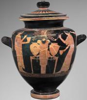 |
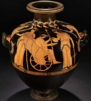 |
| 450 BCE. Bread and wine sacrament with Dionysus. |
430 BCE. Demeter pouring wine (or kykeon) to Triptolemus, with Persephane on the left. |
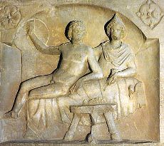
130 CE. Mithras and the Sun god
banqueting on the hide of the slaughtered bull.
banqueting on the hide of the slaughtered bull.
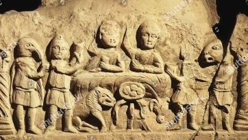
150 CE. Mystic banquet of the Mithraic faithful.
In Book XI of Odysseus by Homer,
drinking the blood temporarily revitalizes the dead in the underworld so they can briefly communicate with Odysseus and speak only the truth.
Metaphoric CrucifixionThe 9 statements given by Paul on Jesus' crucifixion
- "I have been crucified with Christ and I no longer live, but Christ lives in me."Gal. 2:20
- "Before your very eyes Jesus Christ was clearly portrayed as crucified."Gal. 3:1
This could also be a reference to rituals of death & rebirth common in mystery religions.
-
"Those who belong to Christ Jesus have crucified the sinful nature with its passions and desires."Gal. 5:24
-
"May I never boast except in the cross of our Lord Jesus Christ, through whom the world has been crucified to me, and I to the world."Gal. 6:14
-
"For we know that our old self was crucified with him so that the body of sin might be done away with"Rom. 6:6
-
"But we preach Christ crucified, unto the Jews a stumbling block, and unto the Greeks foolishness;"1 Cor. 1:23
-
"For I am determined not to know anything among you except Jesus Christ and Him crucified."1 Cor. 2:2
-
" For to be sure, he was crucified in weakness, yet he lives by God's power."2 Cor. 13:4
-
"None of the rulers of this age understood it [God's secret wisdom that has been hidden before time began], for if they had, they would not have crucified the Lord of glory. However, as it is written: "No eye has seen, no ear has heard, no mind has conceived what God has prepared for those who love him" but God has revealed it to us by his Spirit. The Spirit searches all things, even the deep things of God. For who among men knows the thoughts of a man except the man's spirit within him?"1 Cor. 2:6
Like in Ephesians 2:2 or 3:10,
most scholars think Paul uses 'Rulers'
from the Greek 'archon' meaning 'spiritual powers' or 'demons'.
Although, it is debatable
There are two other references to 'crucifixion'
in the Epistles in Rev. 11:8 and Hebrews 6:6.
They are very similar to the ones quoted above.
In the middle of an era of salvation cults and apocalyptic literature and beliefs,
Paul's crucifixion resembles the acts of salvation performed by the other savior gods of the time:
Osiris, Attis, Mithras, Dionysus, Persephone, Tammuz, Ishtar...
 |
 |
| 1300 BCE Book of the Dead: Papyrus of Ani. Osiris, ruler of the underworld after his body has been dismembered. |
4th Century BCE. Birth of Dionysus after his mother died. In another myth, he was eaten by the Titans. |
 |
 |
| 140 CE. Mithras slaying the sacred Bull. | 340 BCE. Rape of Persephone. |
 |
| 1st Century CE. Reclining Attis before he dies, after his emasculation. |
See Epistles A Dying & Rising Savior
Visions of ResurrectionMost early Christian thinking seems to have envisioned Jesus as ascending to heaven immediately after his death.
The epistle writers show no concept of a bodily resurrection after three days,
or of a period during which the risen Christ made appearances to human beings on earth.
"through the resurrection of Jesus Christ who entered heaven after receiving
the submission of angelic authorities and powers, and is now at the right hand of God"
1 Peter 3:20-22
". ..which (God) exerted in Christ, when he raised him from the dead,
when he enthroned him at his right hand in the heavenly realms."
Ephesians 1:20
"Christ offered for all time one sacrifice for sins, and took his seat at the right hand of God."
Hebrews 10:12
"Christ died for our sins according to the Scriptures,
that He was buried, that He was raised on the third day according to the Scriptures,
and that He appeared to Cephas and then to the Twelve.
After that, He appeared to more than five hundred brothers at once,
most of whom are still living, though some have fallen asleep.
Then He appeared to James, then to all the apostles.
And last of all He appeared to me also, as to one of untimely birth."
1 Corinthians 15:3-8
All these apparitions of the Lord must be visionary like the one of Paul in 2 Corinthians 12.
See 'Paul has seen Jesus like the others' in By Visions & Scriptures in chapter 3 on the epistles.
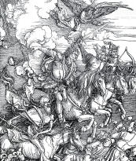 |
|
| Paul is caught up to the third heaven 50 CE 2 Corinthians 12 |
The 4 horsemen 95 CE Apocalypse of John |
These kind of visions, including the one of an apocalyptic figure called 'Son of Man' that Paul has fused with his Christ
were common in the Jewish world preceding the Epistles:
 |
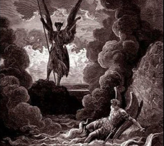 |
| 6th/5th century BCE Book of Zechariah. | 2nd Century BCE Book of Enoch |

Heaven: a world of Fire & Ice
Book of Enoch.
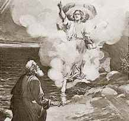
165 BCE Book of Daniel
 |
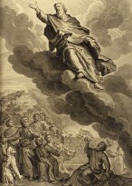 |
| 1st Century BCE Apocalypse of Elijah | 1st century BCE to 1st century CE Apocalypse of Zephaniah |
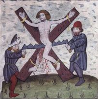 |
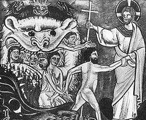 |
| 1st Century BCE Martyrdom of Isaiah | 1st century CE Ascension of Isaiah |
Visions were not specific to Jewish faith but the standard modes of religious revelation in this period.
They were a central characteristic of the Ancient Mysteries.
Moreover, discovery of fragments of Ergot (fungi containing LSD-like psychedelic alkaloids) in a temple
dedicated to the two Eleusinian Goddesses excavated at the Mas Castellar site (Girona, Spain)
supports the theory that the kykeon (Ancient Greek drink) was functioning as an entheogen, or psychedelic agent.
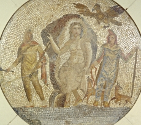 |
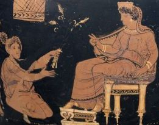 |
| Mithra leaving his cave. | 340 BCE Demeter enthroned and Metaneira kneeling |
A Time of Myth and Visions
The Argument from Silence
| What We Expect |
The Silence We Have |
An Absurd Scenario |
||
|
||||
What We Expect
We will see in two examples below the kind of exchange we expect from the first followers of Jesus.
The Acts of the Apostles
Act is the second book of Luke, after his Gospel.
"Men of Israel, hear me: I speak of Jesus of Nazareth,
a man singled out by God and made known to you through miracles, portents and signs... God has made this Jesus, whom you crucified, both Lord and Christ."
a man singled out by God and made known to you through miracles, portents and signs... God has made this Jesus, whom you crucified, both Lord and Christ."
Speech of Peter in the Acts (2:22-36),
written by Luke around 120-150 CE.
"This would surely be the most natural and inevitable way
Christian discussion and preaching would proceed.
The movement had supposedly begun as a response to a human man.
This man had had such a profound effect on people that they forsook everything in life to preach him.
He should have lain at the forefront of their minds.
And so Acts would seem to indicate. In speech after speech,
the Christian apostles start with the man Jesus
and make certain factual statements and faith declarations about him."
E. Doherty The Jesus Puzzle
"No matter how the death of Jesus is viewed,
the early followers of Jesus were really attempting to draw attention to the life of Jesus.
His death mattered to them because his life mattered to them."
Stephen J. Patterson conclusion of
Beyond the Passion: Rethinking the Death and Life of Jesus
"They [his memorable sayings] are what lived on after him,
they are what his disciples continued to proclaim...
It was his sayings that kept alive stories about what Jesus had done,
indeed engendered more and more stories about him.
These oral traditions moved from Aramaic
into the more literate Greek and came to be written into Gospels..."
J. Robinson The Gospel of Jesus: In Search of the Original Good News p.3
Inevitably, we should find the same type of narratives that we are used to hear all the time today:
"I don't want to talk about his divinity. I'd rather talk about his humanity.
I mean, you know, how he lived his life, here on Earth. His *kindness*, his *tolerance*...
Listen, here's what I think..."
Listen, here's what I think..."
Father Henri in the movie "Chocolat" (2000)
I went to Mass for 20 years and I remember that the priest
was systematically referring to the Historical Jesus, what he was supposed to have said or did.
And now, let's look at another example outside religion...
The Passion of Pliny
one of the most famous volcanic eruptions in history
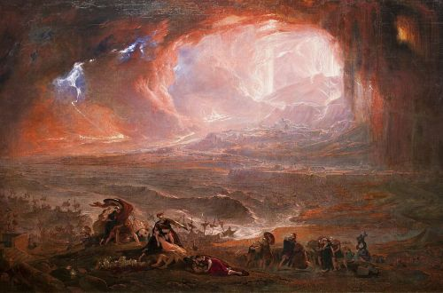
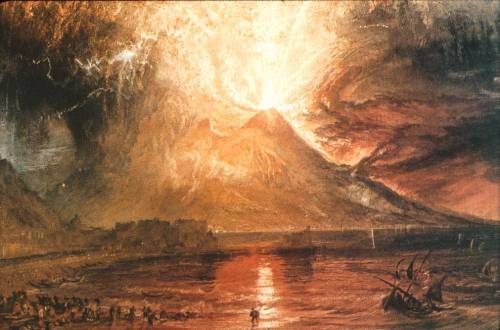
Of the many eruptions of Mount Vesuvius, a major stratovolcano in southern Italy,
the most famous is its eruption in 79 AD, which was one of the deadliest in European history.
...
At the time, the region was a part of the Roman Empire, and several Roman cities were obliterated
and buried underneath massive pyroclastic surges and ashfall deposits, the best known being Pompeii and Herculaneum.
...
The only surviving eyewitness account of the event consists of two letters by Pliny the Younger,
who was 17 at the time of the eruption, to the historian Tacitus and written some 25 years after the event (105 CE).
Observing the first volcanic activity from Misenum across the Bay of Naples from the volcano,
approximately 29 kilometers (18 mi) away, Pliny the Elder (Pliny the Younger's uncle)
launched a rescue fleet and went himself to the rescue of a personal friend.
The Passion of Pliny the Younger
"Pliny the Younger wrote a lot about his uncle and adoptive father, Pliny the Elder.
And the younger Pliny's good friend Tacitus was fascinated by his uncle's heroic death.
So he wrote Pliny a letter asking him to tell him all he knew about the circumstances
of the elder Pliny's death and how he bore it and how he acted in his final days.
Tacitus wanted to include something on it in the history he was writing,
but it's obvious he really just wanted to hear about this remarkable and heroic story.
Who wouldn't? Human curiosity is universal, and something like this could not just be let aside as of no interest.
The circumstances of his death, after all, were 'so memorable that it is
likely to make his name live forever'. Much like Jesus, according to some.
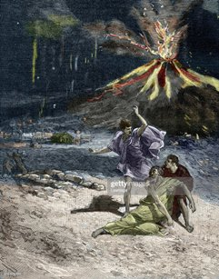
Glad to answer Tacitus, the younger Pliny wrote him a letter containing
an extensive eyewitness account of all he saw and knew about his father's death, in around 1,500 words.
For comparison, Paul's letter to the Galatians, one of his shortest, contains around 3,000 words;
Romans, nearly 10,000... Overall we have around 20,000 words from Paul.
But in Pliny's mere 1,500 words we learn that his father died from respiratory failure after breathing
the ashfall of Mount Vesuvius in his attempt to investigate the disaster
and rescue survivors as commander of the Roman naval fleet stationed nearby.
Pliny relates as much detail as he was witness to and those present informed him of.
Pliny's response peaked Tacitus's curiosity and questions even more, and he wrote again, asking what the
younger Pliny himself did in the days immediately following that tragedy.
Pliny again obliged him with an account of that in a following letter.
As Pliny says,'the letter which you asked me to write on my uncle's death has
made you eager to hear about the terrors and also the hazards I had to face'
afterward.
This is the kind of exchange of letters we should expect to have from the earliest Christians.
Not necessarily in every respect, but surely something like it.
Curiosity, the burning desire to know, to have firsthand accounts,
to have specific questions answered and desires for knowledge satisfied,
would dominate every congregation under Paul and beyond...
R. Carrier, On the Historicity of Jesus p.510-512
The Silence We Have
A man ignored
- Why would writer after writer fail consistently to mention the very man who was the founder of their faith, the teacher of their ethics, the incarnation of the divine Christ they worshiped and looked to for salvation?
- Why would every Christian writer, in the highly polemical atmosphere during those early decades of the spread of the faith, fail to avail himself of the support for his position offered by the very words and deeds of the Son of God himself while he was on earth?
- What could possibly explain this puzzling, maddening, universal silence?
Scholars, in seeking an explanation for Paul's blanket silence on the historical
Jesus rationalize that Paul "had no interest"
in Jesus' earthly incarnation, that his theology did not require it.
This is difficult to fathom as Paul's faith is centered on the crucifixion.
- What bizarre mental processes could have led him to disembody it, to completely detach it from its historical time and place, from the life which culminated on Calvary?
- Why would he transplant the great redeeming act to some mythological realm of demonic powers who were responsible for "crucifying the Lord of glory"(1 Corinthians 2:8)?
- Why would he give Christ "significance only as a transcendent divine being" Herman Ridderbos, Paul and Jesus?
- How can you turn a man into God and attach every mythological concept of the day to him and ignore the human antecedent as though he never existed?
- How can the Christ apostles never gave a clue that their theology grew out of previous views of Jesus as a human man and teacher?
- How likely is it that such a total excision of the cult's previous interests in Jesus would have taken place, even in the process of a dramatic elevation to divinity?
More than 200 times, Paul had the opportunity
in his writings to found or strengthen his theological preach with the sayings and
deeds of Jesus on earth or the events of his life.
- Could Pilate not have served Paul as an example of the "wisdom of the world" which could not understand the "wisdom of God" ?
- How can Paul, in presenting his baptismal, rite cared nothing about Jesus' own baptism by John? About such traditions that he had received the Spirit in the form of a dove, that he had been adopted as Son by the Father in the voice from heaven?
- How can we assume that in all the bitter debates he engaged in through his letters, such as on the validity of the Jewish dietary laws, Paul never felt a need to introduce the Lord's own actions and teachings concerning the subjects under dispute?
- Are we to accept, too, that Jesus' earthly signs and wonders would not have been an incalculable selling point to gentiles, immersed as they were in popular pagan traditions of the wonder-working "divine man," a concept which fitted the earthly career of Jesus to a "T"?
- And are we to believe that, even if Paul had expunged Christ's human life from his own mind, his audiences and converts likewise felt no interest and did not press him for details of Jesus' earthly sayings and deeds -something of which he shows no sign in his letters?
E. Doherty The Jesus Puzzle
A recognized discrepancy
"This discrepancy [between the Gospels and the Epistles] is particularly
striking when behavior or teaching ascribed to him [Jesus] in the gospels
has obvious relevance to the concerns being pursued by the writers of these epistles.
The New Testament scholar Professor Graham Stanton
frankly calls it 'baffling' that Paul fails to
'refer more frequently and at greater length to the actions and teaching of Jesus',
particularly at points where 'he might well have clinched his argument by doing so'.
And Stanton is aware that other epistles present us with 'similar problems'
(Gospel Truth? New Light on Jesus and the Gospels 1995).
Similar remarks have been made by the German New Testament scholar Walter Schmithals,
who also notes that one supposed reference by Paul to gospel material that is commonly adduced
is based on nothing better than mistranslation of his Greek."
G.A. Wells
"If Paul
alone had written as he did of Jesus, one might just possibly be able to attribute this to some personal idiosyncrasy;
but a consistent silence by numerous independent authors about matters which, had they known of them,
they could not but have regarded as relevant to their purposes, cannot be so explained."
G.A. Wells
An Absurd Scenario
If Paul is going to preach only the crucifixion and the resurrection, then
here at least he has to have something to say about them. If he spends the
day telling of Jesus' death and rising, and the significance of these
events, he cannot avoid questions about the physical setting, the historical
circumstances. He cannot talk about the death and resurrection of Jesus and
confine them in some rootless netherworld of spiritual significance with no
link to a worldly time and place.
Or can he? In fact, that is precisely what he does.
An Imaginary Scene
But let's say, for the sake of argument, that Paul steadfastly refused to
gather or preach any information on any aspect of Jesus' earthly life and teachings. We might envision something like the following scene
(no irreverence intended) in some rich Greek's house in the Diaspora, a mix of converts and interested friends and bystanders
gathered about Paul on a warm summer evening. Their conversation might go something like this:
Demetrios: (the host and owner of the house) So, Paul, tell us more about Jesus the Savior. I have heard that he taught the
people with great authority about the coming kingdom of God, and how we should
all love one another.
Paul: Yes, I have heard rumors to that effect, but I
consider such things to be unimportant, and as it happens I am not familiar
with any of his teachings.
Demetrios: I see. But your mission is to gentiles
like ourselves, is it not? Surely Jesus himself included gentiles in his own
ministry and directed his apostles to go out and preach to them? I would
certainly like to think that he did.
Paul: I suppose that's possible. I don't have any
first-hand information.
Hermes: You have performed signs and wonders for us,
Paul, which convinces us that the Lord is indeed speaking through you. I
understand that Jesus himself performed great feats over nature and once fed thousands
with a few loaves of bread. My friend Ampliatus heard about that when he was in the east.
Paul: (clearing his throat) Oh, I don't concern myself
with such things, and you shouldn't either. They're quite insignificant, and
you don't need to know about them to believe in the risen Son of God.
Junias: When I heard you would be here, Paul, I told
my sick mother that perhaps you would come around to see her and expel the
demon that is making her ill. I, too, have heard from a relative in Galilee that
Jesus expelled demons and healed many people-
Herodian: (interrupting in some agitation) Yes, the
demons have been especially active in my own household. My brother has
contracted a fever, and just last week the roof of my workshop collapsed for no reason-
Paul: (with a placating gesture) There is no doubt that
evil spirits beset us on all sides, my friends, and we must have faith that God
will deliver us from them. As to reports of healings by Jesus, perhaps he did,
but then every wonder-worker in the country makes such claims, so perhaps we
should not place too much importance on such things.
Olympas: You have told us about the coming End,
Paul, and I look forward to our promised deliverance from this sorry world,
but I am greatly frightened by what may happen. Did Jesus reveal anything to
his disciples about what things would be like when he comes back from heaven?
Paul: (somewhat miffed) Who knows? One can't rely on what
those so-called 'men of repute' in Jerusalem are spreading around anyway. After
all, they're only fishermen. Besides, as I have told you, I have information on the
subject directly from Christ himself-
Agrippa: (a Jew) Some of my Jewish friends have
heard of your preaching, Paul, but when I invited them to join us at table,
they said they could not break their purity regulations and eat with gentiles.
Did Jesus follow such strict rules and refuse to eat with the unclean-
(gesturing to the others) not that I subscribe to such rigid views myself.
Paul (exasperated) I have no idea.
Crispus: (looking a little pained) I have a Jewish
friend, too, who is a follower of Christ. But he says that even the gentile has
to be circumcised-(pained expressions all around)-and follow every aspect of the
Jewish law if he wishes to become a member of your faith in Christ.
Is that so? Did Jesus specify such a requirement?
Paul: My friends, my friends, why all these foolish
questions? What Jesus may have said or done in the course of his life is completely
immaterial. I have already informed you of the only thing that matters,
Christ's own suffering and death, and his rising from the dead. These are the things that
have brought us salvation!
Demetrios: (hastily, sensing some perplexity and
unease among his guests) Yes, my friends, the Lord's passion is surely what we should all be focusing
on, and what he went through in his terrible ordeal. Tell us about that,
Paul. Was he tortured and scourged before they crucified him?
Paul: (shrugging) I assume he was. The Romans do that to
everyone they crucify.
Gaius: (spitting in disgust) Yes, and here they
break the condemned man's legs to make him die more painfully.
I suppose they did that to Jesus, too?
Paul: I don't know. I wasn't there.
Archippus: Tell us what he said, Paul, when they put
him up on the cross. Even now the authorities are persecuting new believers in
Christ and I wonder if we'll suffer their hatred, too, just as Christ did. Did he speak?
Did he stand fast? Did he condemn them for what they did?
Paul: (curtly) I didn't ask. But let me tell you about
what the Lord revealed to me personally-
Julia Oh, how I envy you, Paul! You who have been
to Jerusalem and could stand on the very spot where Jesus was crucified. That
would give me the shivers. You must have felt his presence. Is that when he
spoke to you?
Paul: My dear lady, I've never been to Calvary. I
couldn't find the time when I went to see Peter and James. It's only a little hill, after all.
Persis: But the tomb, Paul. Did you not see that?
Are there still signs of the Lord's resurrection? Do Jesus'
followers pray there every Easter Sunday?
Paul: (throwing up his hands) As to that, I couldn't say.
But one tomb is much like another, don't you think? Why fill your heads with such paltry
details? We should better focus on the eternal significance of these events-
Demetrios: (noting nervously that a couple of his
guests had quietly slipped away) Well, I am sure we all agree that Paul has been very enlightening on
the subject of Christ Jesus. Perhaps we should retire to the atrium for
aperitifs and he can tell us more. . . .
A fantasy?
In more ways than one. There are other, insurmountable problems in these sorts of explanations.
If Paul had no interest in Jesus the teacher, in Jesus the miracle worker, in Jesus the apocalyptic prophet,
what on earth led him to this man, and caused him to elevate him to such a cosmic level?
Earl Doherty, The Jesus Puzzle Appendix 2
"In any event,
explanations for Paul's silence and lack of interest would
have to apply to all the other early epistle writers, who are equally silent--a situation so extraordinary
as to defy rationalization. Amid such considerations, the argument from silence becomes legitimate and compelling.
The total silence about a recent historical man and the movement he would have founded
in Galilee is a problem scholars are unable to solve."
E. Doherty The Jesus Puzzle
Appendix: 200 Years of Records
A table showing when 33 keywords appeared in Christian records.
200 Years of Records.
200 Years of Records.
Open Popup menu to navigate other pages